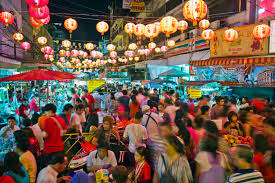

3. Bangkok
#Let me Dress Like a Bollywood Diva!!

The insider Photographer Matt Burns splits his time between Australia and Bangkok (southeastasiaimages.com).
What's hot Fun street markets, great hotels and spectacular food. 69/100 for affordability.
What's not Dodgy counterfeits. 50/100 for culture and climate.
The address book Monte Carlo tailors isn't a cheap option, but the staff do provide fantastic quality and service. Expect to pay $300-$1000 for a suit, depending on the cloth (mctailor.com). I can't recommend Fotofile in the MBK Centre highly enough for its professional camera equipment and unsurpassed knowledge and service. Try and talk to Khun Kong for the best service (fotofile.net). Pantip Plaza has every piece of computer equipment you'll ever need, but know your prices first (604 New Petchaburi Road). For clothes, homewares and pretty much everything in the world, visit the Chatuchak weekend market. Get in early before the heat and crowds (chatuchak.org) and shop for Thai silk at Narai Phand in the Royal Thai Government Handicrafts Centre (naraiphand.com).
Getting there Fly Sydney to Bangkok direct with Thai Airways (thaiairways.com.au), Emirates (emirates.com) or Qantas (qantas.com).
Staying there The new, wallet-friendly Aloft Bangkok is a quick tuk-tuk trip to Bangkok's shopping strips (aloftbangkoksukhumvit11.com).
More info thailand.net.au.